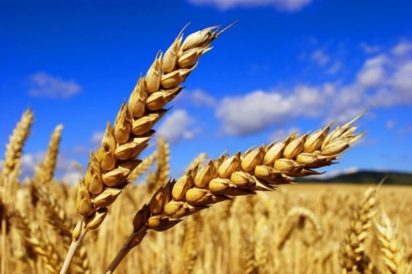

Pszenica jest najczęściej uprawianym gatunkiem na świecie. Areałem ustępują jej ryż i kukurydza.
W Europie procentowy udział tego gatunku wynosi około 47%. Pszenica uprawiana jest z przeznaczeniem na konsumpcję:
mąki, kasze, płatki, otręby oraz na cele paszowe. W związku z różnym przeznaczeniem wymagane są różne parametry takie jak
zawartość białka, glutenu, liczba opadania czy też właściwości wypiekowe.
